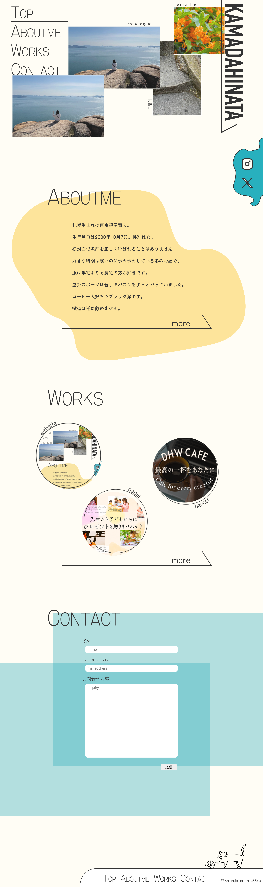
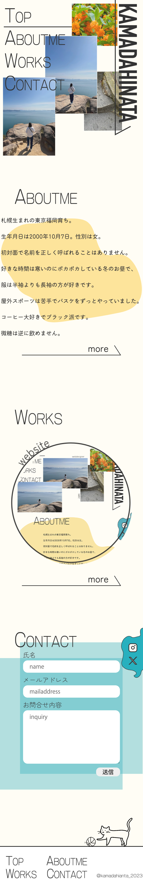
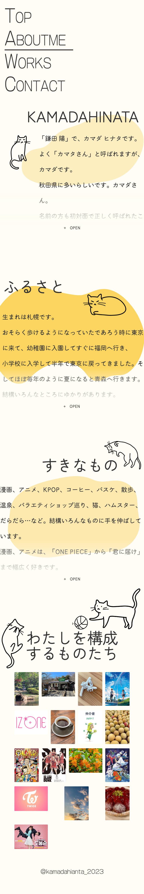
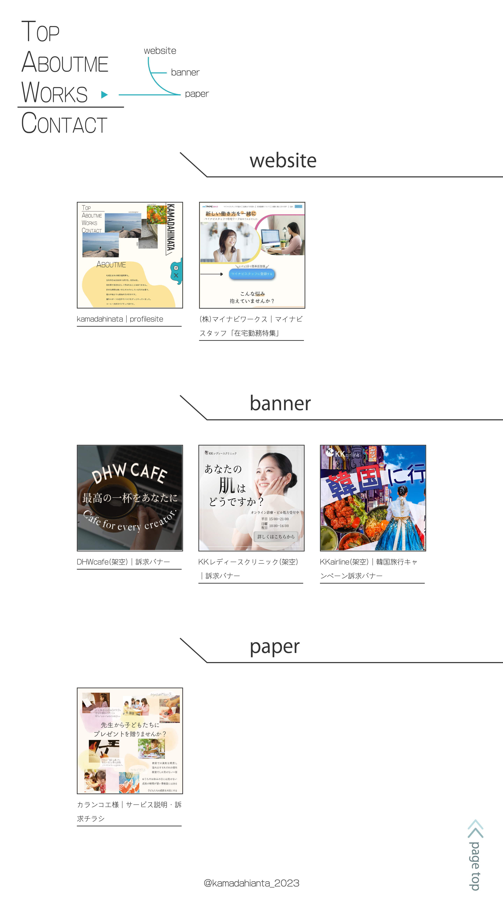

pc

mb

自分のことを紹介している「ABOUTME」のセクションには、 私がのんびりとすることが好きなのでゆったりとした 雰囲気を、ポートフォリオの「WORKS」と、お問合せフォ ームの「CONTACT」のセクションには、仕事を依頼 する相手として安心感を感じられるよう、 しっかりとした雰囲気を持たせました。
pc

mb

TOPページの「ABOUTME」のセクションと同じ、ゆったりとした 雰囲気を持たせました。 パソコンサイズの「わたしを構成するものたち」のセクションでは、 写真の上にカーソルを合わせることで、その写真について のエピソードが現れるようになっています。
pc

mb

TOPページの「WORKS」のセクションと同じ、しっかりとした 雰囲気を持たせました。 それぞれの作品の画像の上にカーソルを合わせることで、画像が少し 拡大し、その作品の説明ページ（現在のページ）に移動することが できることを視覚的にわかるようにしました。 また、今後作品が増えることでページが長くなっていくため、 ページトップに戻るボタンをある程度スクロールすることで 出現させるようにしました。